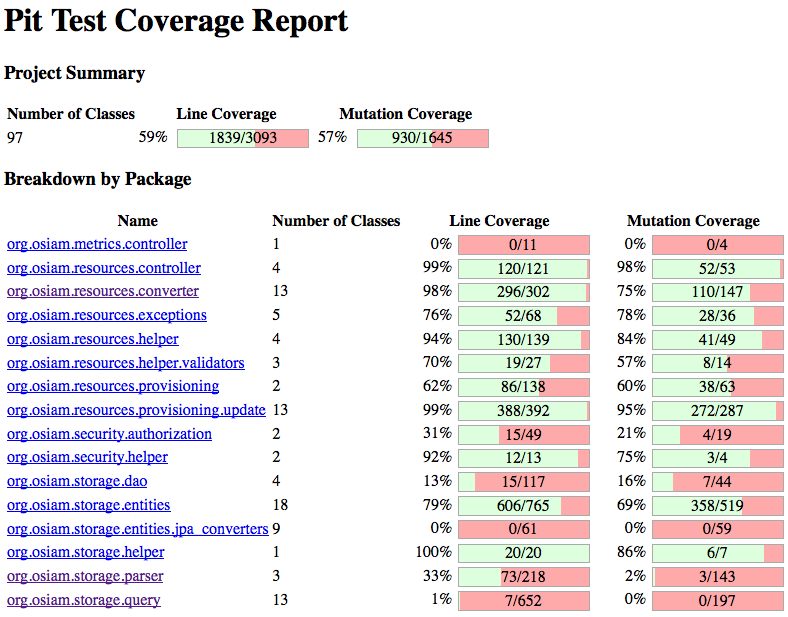

Mutation tests with PIT (pitest)
PIT is a state of the art mutation testing system, providing gold standard test coverage for Java and the jvm. Its fast, scalable and integrates with modern test and build tooling.

Presenter Notes
What's wrong here?
1 public static String foo(boolean b) {
2 if (b) {
3 performVitallyImportantBusinessFunction();
4 return "OK";
5 }
6
7 return "FAIL";
8 }
9
10 @Test
11 public void shouldFailWhenGivenFalse() {
12 assertEquals("FAIL", foo(false));
13 }
14
15 @Test
16 public void shouldBeOkWhenGivenTrue() {
17 assertEquals("OK", foo(true));
18 }
Presenter Notes
And here?
1 public static String foo(int i) {
2 if ( i >= 0 ) {
3 return "foo";
4 } else {
5 return "bar";
6 }
7 }
8
9 @Test
10 public void shouldReturnBarWhenGiven1() {
11 assertEquals("bar", foo(1));
12 }
13
14 @Test
15 public void shouldReturnFooWhenGivenMinus1() {
16 assertEquals("foo", foo(-1));
17 }
Presenter Notes
Definition
Mutation testing is conceptually quite simple.
Faults (or mutations) are automatically seeded into your code, then your tests are run. If your tests fail then the mutation is killed, if your tests pass then the mutation lived.
The quality of your tests can be gauged from the percentage of mutations killed.
Presenter Notes
Show me the results!

Presenter Notes
How long does it take?
Eaxmple for OSIAM Resource server
================================================================================
- Timings
================================================================================
> scan classpath : < 1 second
> coverage and dependency analysis : 10 seconds
> build mutation tests : < 1 second
> run mutation analysis : 2 minutes and 27 seconds
--------------------------------------------------------------------------------
> Total : 2 minutes and 38 seconds
================================================================================
- Statistics
================================================================================
>> Generated 1645 mutations Killed 930 (57%)
>> Ran 5927 tests (3.6 tests per mutation)
================================================================================
2:27 of 2:48 total!
Presenter Notes
Integrate it!
1 <plugins>
2 <plugin>
3 <groupId>org.pitest</groupId>
4 <artifactId>pitest-maven</artifactId>
5 <configuration>
6 <mutationThreshold>50</mutationThreshold>
7 <targetClasses>
8 <param>org.osiam.*</param>
9 </targetClasses>
10 <targetTests>
11 <param>org.osiam.*</param>
12 </targetTests>
13 </configuration>
14 </plugin>
15 </plugins>
16
17 mvn compile test-compile org.pitest:pitest-maven:mutationCoverage -Dthreads=2
Presenter Notes
PIT Highlights
- test coverage first
- incremental analysis
- scm based optimization see Maven Quickstart
- plugin mutators
- mutation filters
Presenter Notes
Mutators
- Conditionals Boundary Mutator
- Negate Conditionals Mutator
- Remove Conditionals Mutator
- Math Mutator
- Increments Mutator
- Invert Negatives Mutator
- Inline Constant Mutator
- Return Values Mutator
- Void Method Calls Mutator
- Non Void Method Calls Mutator
- Constructor Calls Mutator
- Experimental Inline Constant Mutator
- Experimental Member Variable Mutator
- Experimental Switch Mutator
Presenter Notes
Summing up
- mutation testing is very effective
- ...but really slow
- pitest makes it reasonably cheap
- no excuses to not include in your project!
Presenter Notes
...well
- no excuses maybe besides the lacking CI suitability
- being worked on...